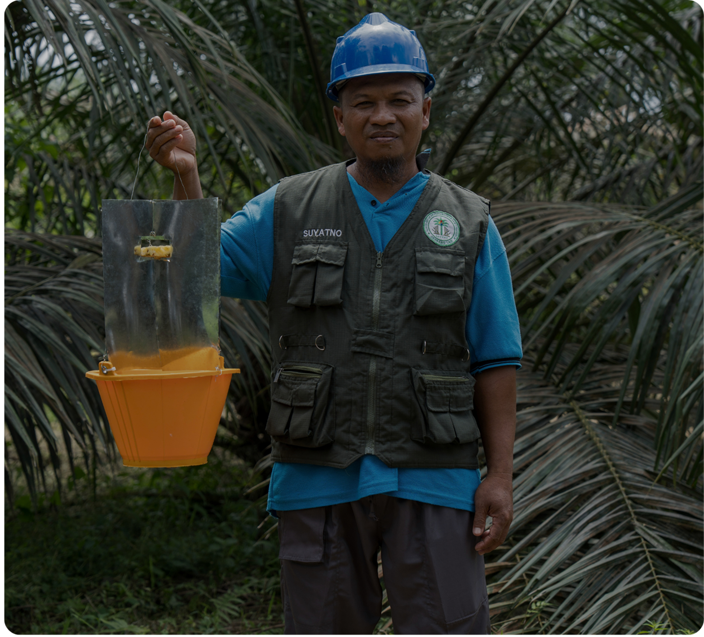

Meningkatnya Produktivitas dan Peluang Penghidupan
Menguatnya Komitmen Petani terhadap Keberlanjutan
Pertanian Regeneratif
Pertanian regeneratif tidak hanya bertujuan mempertahankan produktivitas, tetapi juga memulihkan kesehatan tanah, memperkuat ekosistem, dan meningkatkan ketahanan sistem pertanian. Melalui Sekolah Lapangan, petani didukung untuk menerapkan praktik yang memberikan manfaat baik bagi kebun dan juga lingkungan.

15,600+
Petani Terlatih
9,596
di Indragiri Hulu
6,056
di Rokan Hulu and Rokan Hilir
Membekali petani dengan pengetahuan dan keterampilan untuk menerapkan praktik regeneratif dan berkelanjutan.
"Menjadi petani kelapa sawit bukan hanya mengejar hasil, tetapi juga tentang menjaga lingkungan untuk generasi yang akan datang”
"
— Nurhadi, Kilang Jaya Farmer Group
“Dengan adanya Sekolah Lapangan, kami merasa senang karena dapat meningkatkan hasil produksi sawi sekaligus mendapatkan ilmu-ilmu baru yang sebelumnya belum kami dapatkan. Terima kasih. Semoga kegiatan ini terus berlanjut.”
— Ngatijan, Koperasi Pertama Erti Utama
“Bagi saya, Sekolah Lapangan Kelapa Sawit membuka cara pandang baru tentang bertani. Dulu, saya berpikir bahwa bertani hanya mengikuti kebiasaan orang tua. Namun, di sini saya belajar bahwa bertani juga membutuhkan ilmu dan perencanaan.”


 di Indragiri Hulu
di Indragiri Hulu